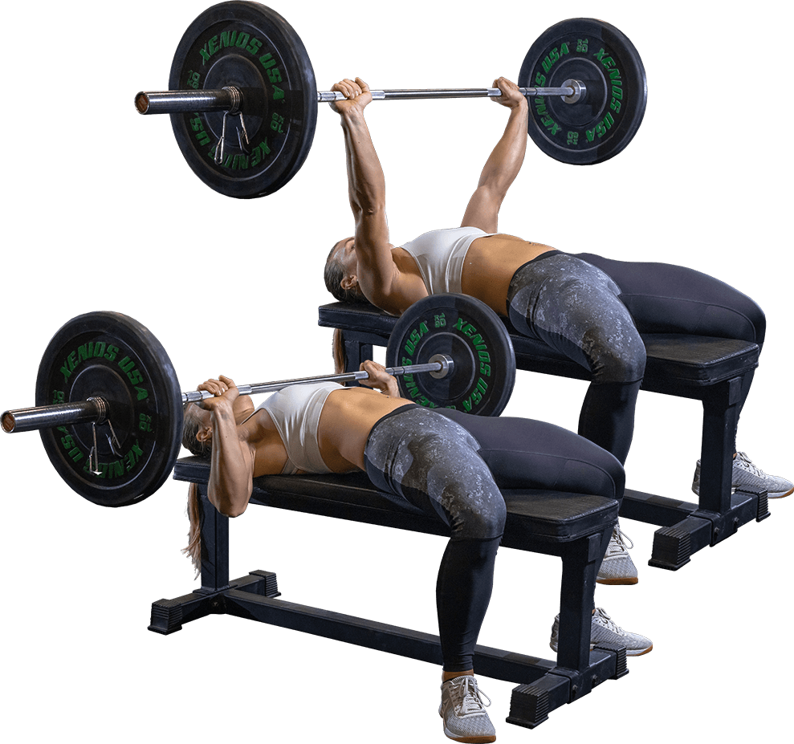

Általános szabályok
- A Bírói vezényszavak minden gyakorlat esetén az elvégzett érvényes ismétlések száma
- A Komplett versenyszám kötelező végrehajtási sorrendje: Guggolás, Fekvenyomás, Felhúzás, Mellről nyomás, Húzódzkodás/Bicepsz
- A gyakorlatok közötti pihenő idő MAXIMUM 5 perc
Guggolás
Kötelező versenyruházat:
póló, rövid nadrág.
Használható felszerelés:
térdgumi, öv, csuklóbandázs. PROFI kategóriahasználhat még térdbandázst.
Gyakorlat végrehajtása:
nyújtott térddel kell indítani minden gyakorlatot és addig kell leguggolni, hogy atérd és a csípő forgási pontja vizszíntes legyen. Onnan lehet felállni. Minden egyes guggolást bírói vezényszóra szabad újra megkezdeni (érvényes ismétlésekszáma), melyet a bíró akkor ad meg, ha a kiindulási pozíció rendben (azaz nyújtott a térd). A guggolások között legfeljebb 5 mp pihenő tartható. Ha ennéltöbbet vár valaki, a vezényszót követően, akkor vége a sorozatának.
Fekvenyomás

Kötelező versenyruházat:
póló, rövid nadrág.
Használható felszerelés:
öv, csuklóbandázs.
Gyakorlatvégrehajtása:
nyújtott könyökkel kell elindítani a gyakorlatot és azzal is kell minden egyes nyomást befejezni. A mellet érintenie kell a rúdnak.Fogásszélesség legfeljebb 81 cm (ezen belül kell fogni a rúdat). A rúdat át kell fogni a hüvelyk ujjal. A rúd mellen történő pattintása tilos, érvénytelen. Afenéknek a paddal a gyakorlat közben folyamatosan érintkeznie kell. A talp valamely részének a talajjal folyamatosan érintkeznie kell.
Felhúzás
Kötelező versenyruházat:
póló, testhez simuló nadrág, és térdzokni (hosszú nadrág esetén nem szükséges), cipő (balettcipő is elfogadható).
Használható felszerelés:
térdgumi, öv, csuklóbandázs, gurtni.
Gyakorlat végrehajtása:
Szumó felhúzás nem megengedett! a földről kell felhúzni a súlyt, úgy hogy a végén nyújtott legyen a térd és a kar. Ekkor a bírói vezényszóra (érvényes ismétlések száma) meg lehet kezdeni a leengedést. A súlynak érintenie kell a talajt és meg kell állítani, utána lehet kezdeni az új gyakorlatot. A súlyt a földről pattintani tilos, érvénytelen. A súlyt a combon segítő szándékkal megtámasztani érvénytelen. Az ismétlések között legfeljebb 3 mp pihenő tartható, mely közben a rúdat elengedni tilos. Ha ennél többet vár valaki, akkor vége a sorozatának.
Mellről nyomás

Kötelező versenyruházat:
póló, rövid nadrág.
Használható felszerelés:
könyökgumi, öv, csuklóbandázs.
Gyakorlat végrehajtása:
a földről kell felvenni a súlyt. Kiindulási pozíció, hogy a mell és az áll között kell legyen a rúd. Láblökéses nyomás megengedett, de a talp lent kell maradjon a földön. A gyakorlat nyújtott könyökkel való kinyomás esetén érvényes. Bírói vezényszót (érvényes ismétlések száma) követően lehet visszaengedni az áll alá. Leesik a súly (akár előre, akár hátra) akkor vége a sorozatnak (amikor leesik az nem számít teljesített gyakorlatnak).